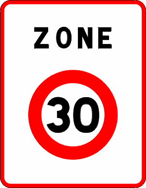

This entry is not yet part of a full release. What the DRAFT watermark means
13-866 · Maximum speed zone¶
Informative · pictogram code 13-866 · five-digit code 13866
Current Draft
Notice of a maximum speed zone.
| Service category | Informative (13) |
| Pictogram category | 866 |
| Group | Road or place identification |
| Status | Current (C) |
| Registered | 2017 |
| UN / Vienna Convention | E,9d |
Country graphics¶
